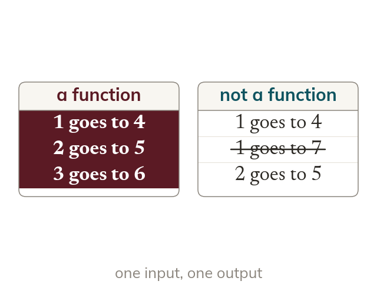

One output for each input
A function gives exactly one output for every input. An input with two outputs means it is not a function.
A function gives exactly one output for every input, so the same input can never lead to two different outputs. A table that sends one input to two outputs is not a function.